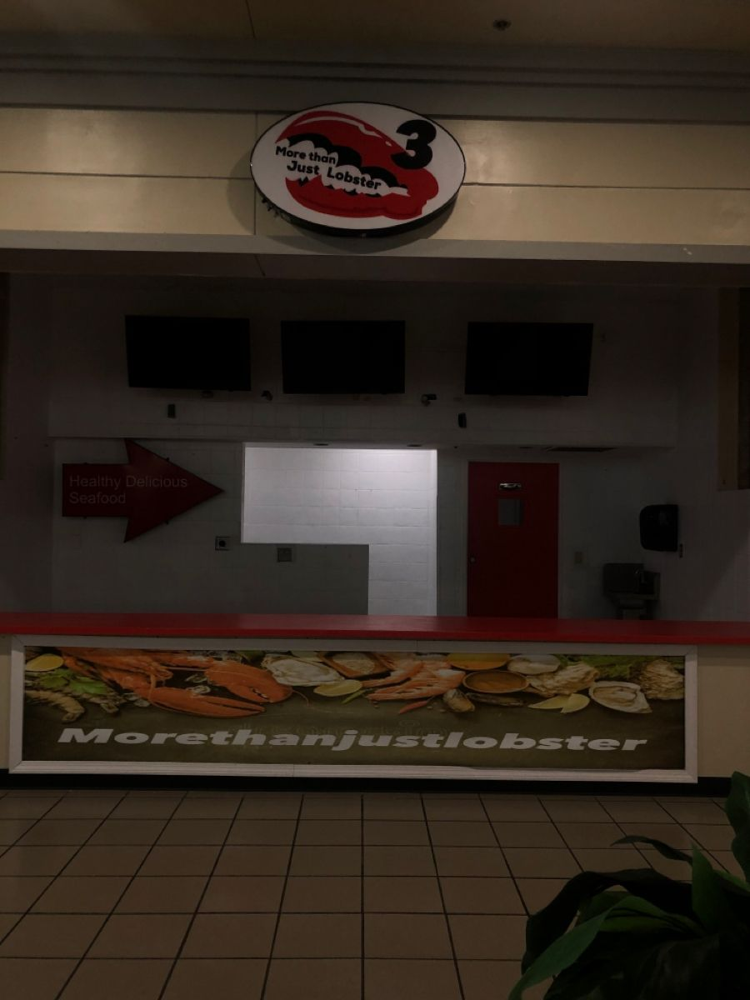

Projetos
Conheça os projetos em andamento e oportunidades de voluntariado.
Lista de projetos
-
Oficina de Apoio Escolar
Descrição curta do projeto, público-alvo e impacto.
Vagas: 10 voluntários
-

Banco de Alimentos Comunitário
Descrição curta.
Meta: 1.000 cestas